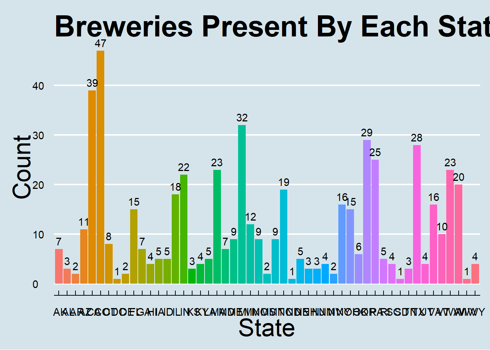
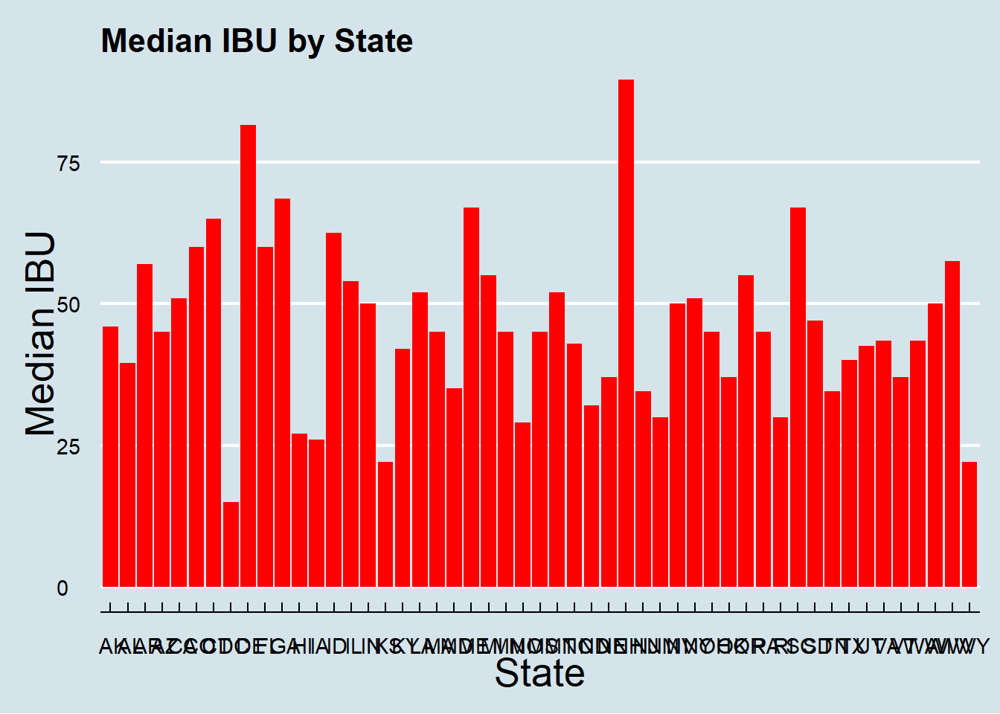
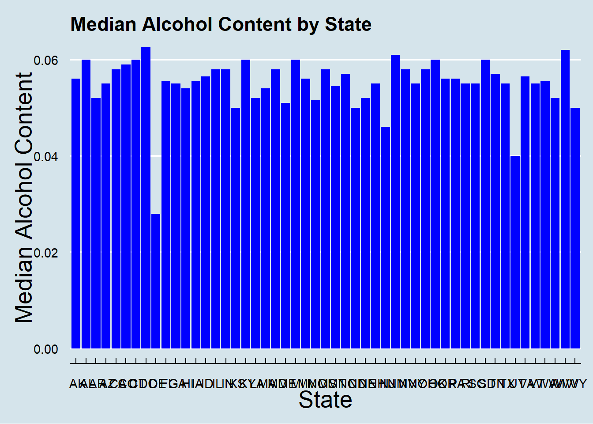
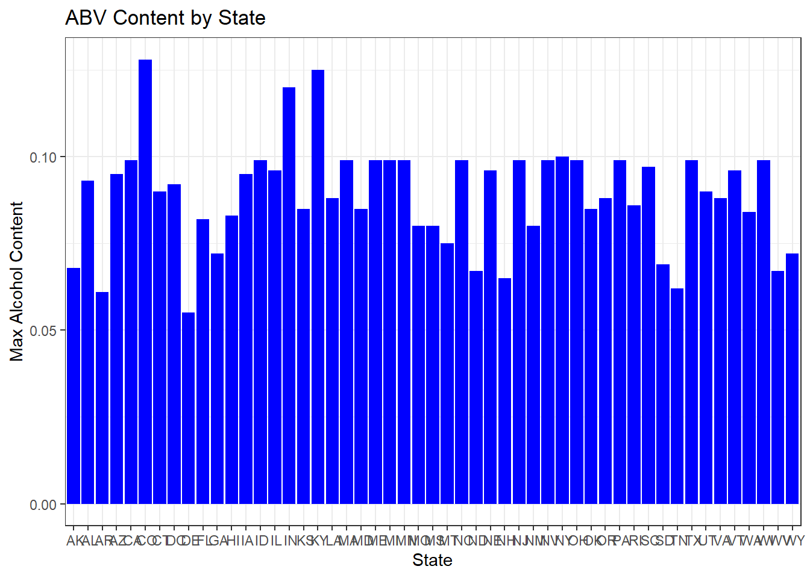
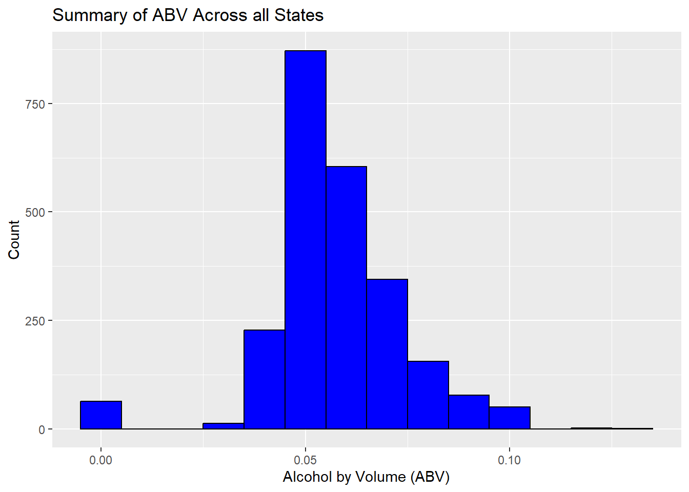
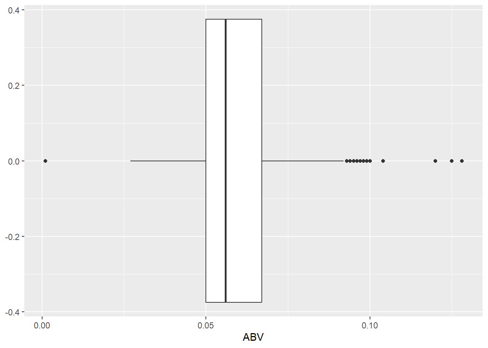
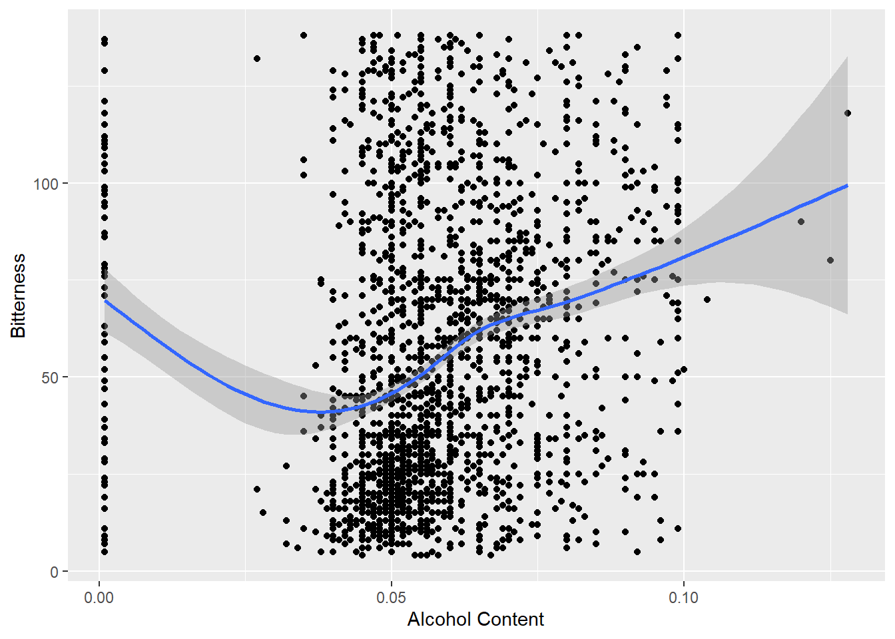
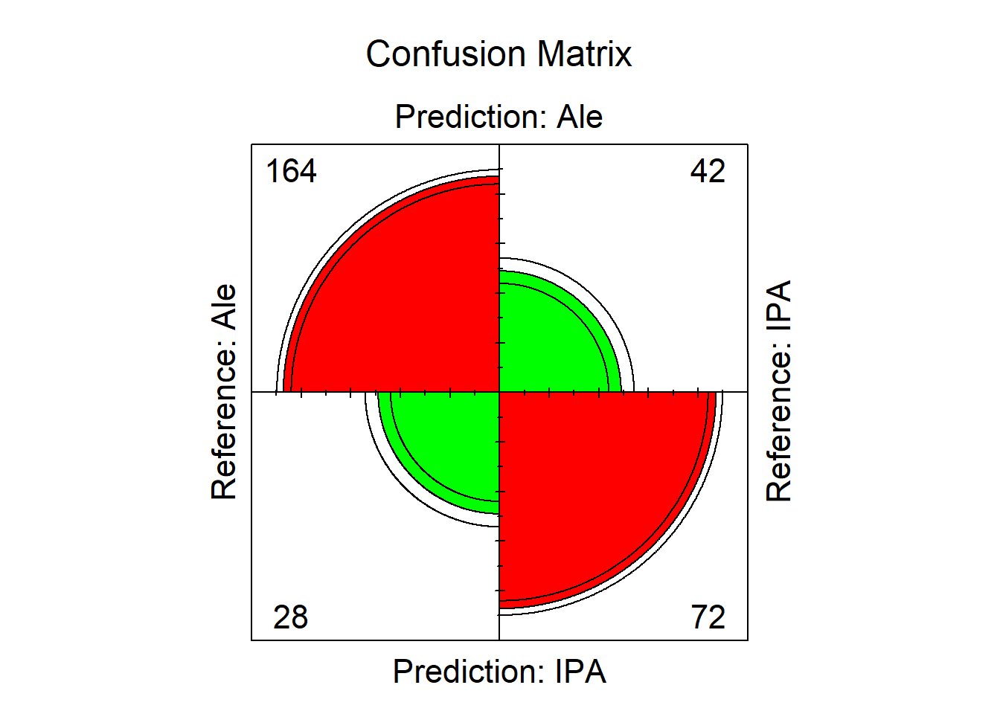
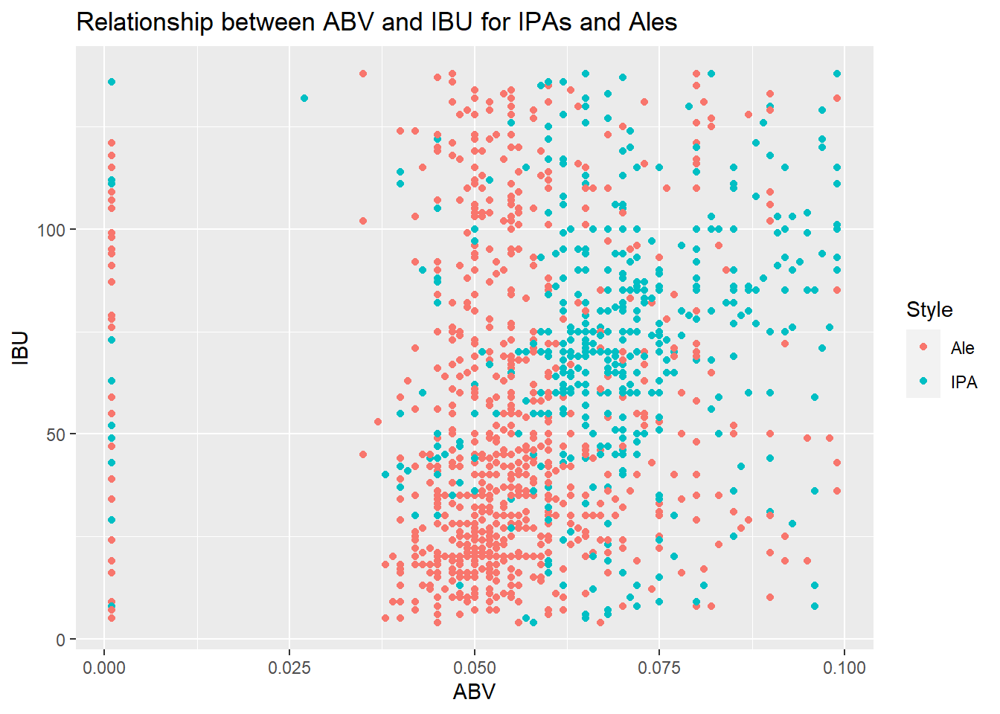
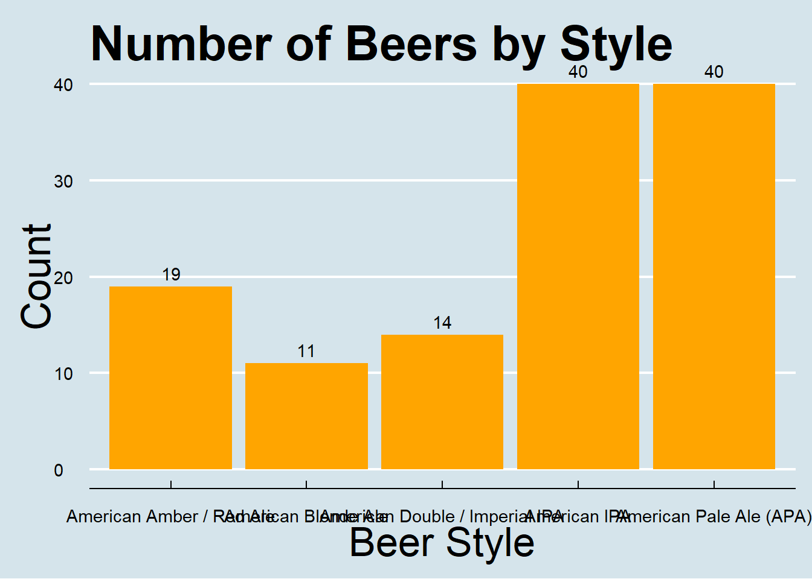

Project 1
Pejal Rath and Kyle Kuberski
2023-03-15
#1. How many breweries are present in each state?
library(e1071)
library(tm) #text mining library provides the stopwords() function
library(tidyr)
library(plyr)
library(jsonlite)
library(dplyr)
library(tidyverse)
library(mvtnorm)
library(caret)
library(class)
library(ggplot2)
library(plotly)
library(ggthemes)
beer=read.csv(file.choose(),header = TRUE)
brewer=read.csv(file.choose(),header = TRUE)
brewerByState=brewer %>% count(State)
colnames(brewerByState)[2]="Count"
brewerByState %>% ggplot(aes(x=State,y=Count,fill=State))+geom_histogram(stat = "summary") +geom_text(aes(label = Count), vjust = -0.5)+ggtitle("Breweries Present By Each State")+ theme_economist()+theme(legend.position = "none",axis.title = element_text(size = 25),plot.title = element_text(size = 30, face = "bold"))## Warning in geom_histogram(stat = "summary"): Ignoring unknown parameters: `binwidth`, `bins`, and `pad`## No summary function supplied, defaulting to `mean_se()`
#3. Address the missing values in each column.
#Fill IBU missing value
set.seed(5)
IBU_na=which(is.na(beer$IBU))
IBU_fill=sample(4:138, 1005,replace=TRUE)
for(i in 1:1005)
{
beer$IBU[IBU_na[i]]=IBU_fill[i]
}
#Fill ABV missing value
set.seed(5)
ABV_na=which(is.na(beer$ABV))
ABV_fill=sample(0.001:0.128, 62,replace=TRUE)
for(i in 1:62)
{
beer$ABV[ABV_na[i]]=ABV_fill[i]
}
# Change Ounces to factor type
beer$Ounces=factor(beer$Ounces)
#4. Compute the median alcohol content and international bitterness unit for each state. Plot a bar chart to compare.
#2. Join the two table
beer_data <- merge(beer,brewer, by.x="Brewery_id",by.y="Brew_ID")
colnames(beer_data)[2]="BeerName"
colnames(beer_data)[8]="BreweryName"
#beer_data$ABV=as.numeric(beer_data$ABV)
summary_ABVIBU<- beer_data %>% group_by(State) %>% summarize(median_ABV = median(ABV),median_IBU = median(IBU))
summary_ABVIBU %>% ggplot(aes(x=State))+geom_bar(aes(y=median_IBU),stat="identity",fill="Red")+labs(title = "Median IBU by State", x = "State",y = "Median IBU") +theme_economist()+theme(axis.title = element_text(size = 20))
summary_ABVIBU %>% ggplot(aes(x=State))+geom_bar(aes(y=median_ABV),stat="identity",fill="blue")+labs(title = "Median Alcohol Content by State", x = "State",y = "Median Alcohol Content") +theme_economist()+theme(axis.title = element_text(size = 20))
#5
#Max for ABV
beer_data[which.max(beer_data$ABV),]$State## [1] " CO"beer_data[which.max(beer_data$ABV),]$BreweryName## [1] "Upslope Brewing Company"beer_data[which.max(beer_data$ABV),]$BeerName## [1] "Lee Hill Series Vol. 5 - Belgian Style Quadrupel Ale"beer_data[which.max(beer_data$ABV),]$ABV## [1] 0.128#Min for ABV
beer_data[which.min(beer_data$ABV),]$State## [1] " MI"beer_data[which.min(beer_data$ABV),]$BreweryName## [1] "Brewery Vivant"beer_data[which.min(beer_data$ABV),]$BeerName## [1] "Fat Paczki"beer_data[which.min(beer_data$ABV),]$ABV## [1] 0.001#Max for IBU
beer_data[which.max(beer_data$IBU),]$State## [1] " NY"beer_data[which.max(beer_data$IBU),]$BreweryName## [1] "Sixpoint Craft Ales"beer_data[which.max(beer_data$IBU),]$BeerName## [1] "Abigale"beer_data[which.max(beer_data$IBU),]$IBU## [1] 138#Min for IBU
beer_data[which.min(beer_data$IBU),]$State## [1] " MI"beer_data[which.min(beer_data$IBU),]$BreweryName## [1] "Brewery Vivant"beer_data[which.min(beer_data$IBU),]$BeerName## [1] "Belfort"beer_data[which.min(beer_data$IBU),]$IBU## [1] 4max_ABV_IBU<- beer_data %>% group_by(State) %>% summarize(max_ABV = max(ABV),max_IBU = max(IBU))
maxsummary_ABVIBU<- beer_data %>% group_by(State) %>% summarize(max_ABV = max(ABV),max_IBU = max(IBU))
maxsummary_ABVIBU %>% ggplot(aes(x=State))+geom_bar(aes(y=max_ABV),stat="identity",fill="blue")+labs(title = "ABV Content by State", x = "State",y = "Max Alcohol Content") +theme_bw()
maxsummary_ABVIBU %>% ggplot(aes(x=State))+geom_bar(aes(y=max_IBU),stat="identity",fill="red")+labs(title = "IBU Content by State", x = "State",y = "Max Alcohol Content") +theme_bw()
#6 summary ABV and distribution of ABV
beer_data[which.min(beer_data$ABV),]$State## [1] " MI"summabv<-summary(beer_data$ABV)
beer_data %>% ggplot(aes(x=ABV)) + geom_histogram(binwidth =0.01, fill = "blue", col = "black")+
labs(title = "Summary of ABV Across all States", x = "Alcohol by Volume (ABV)", y= "Count")
ggplot(beer_data, aes(ABV), col=State) +
geom_boxplot()
#7
ggplot(beer_data, aes(x = ABV, y = IBU)) +
geom_point() +
labs(x = "Alcohol Content", y = "Bitterness")+geom_smooth()## `geom_smooth()` using method = 'gam' and formula = 'y ~ s(x, bs = "cs")'
# Yes, there is an apparent relationship between the bitterness of the beer and its alcoholic content. Base on visualization, there are evidences to show the higher alcohol content then the beer also has higher IBU.
#8
#create IPA/Ale dataframe
ipa_ale <- beer %>% filter(grepl('IPA|Ale', Style))
ipa_ale$Style <- factor(ifelse(grepl("IPA", ipa_ale$Style), "IPA", "Ale"), levels = c("Ale", "IPA"))
##KNN classifier training and test sets
set.seed(123) # for reproducibility
trainIndex <- createDataPartition(ipa_ale$Style, p = .8, list = FALSE)
train <- ipa_ale[trainIndex, ]
test <- ipa_ale[-trainIndex, ]
#set 'k' and create model
k <- 3
model <- knn(train[, c("ABV", "IBU")], test = test[, c("ABV", "IBU")], cl = train$Style, k = k)
##levels will not work unless they are the same level and both factors
### Using grepl to check variables for IPA, and assigning it to IPA as a level (same for Ale)
ipa_ale$Style <- factor(ifelse(grepl("IPA", ipa_ale$Style), "IPA", "Ale"), levels = c("Ale", "IPA"))
confusionMatrix(model, reference = test$Style)## Confusion Matrix and Statistics
##
## Reference
## Prediction Ale IPA
## Ale 164 42
## IPA 28 72
##
## Accuracy : 0.7712
## 95% CI : (0.72, 0.8171)
## No Information Rate : 0.6275
## P-Value [Acc > NIR] : 5.06e-08
##
## Kappa : 0.4982
##
## Mcnemar's Test P-Value : 0.1202
##
## Sensitivity : 0.8542
## Specificity : 0.6316
## Pos Pred Value : 0.7961
## Neg Pred Value : 0.7200
## Prevalence : 0.6275
## Detection Rate : 0.5359
## Detection Prevalence : 0.6732
## Balanced Accuracy : 0.7429
##
## 'Positive' Class : Ale
## cmf<- confusionMatrix(model, reference = test$Style)
fourfoldplot(as.table(cmf),color=c("green","red"),main = "Confusion Matrix")
ggplot(ipa_ale, aes(x = ABV, y = IBU, color = Style)) +
geom_point() +
labs(title = "Relationship between ABV and IBU for IPAs and Ales",
x = "ABV", y = "IBU")
#9
data_ca <- beer_data %>% filter(State==" CO")
group_style<- data_ca%>% group_by(Style) %>%
summarize(count = n())
top_5_styles <- group_style %>%
top_n(5,count)
ggplot(top_5_styles, aes(x = Style, y = count)) +
geom_bar(stat = "identity", fill = "orange")+geom_text(aes(label = count), vjust = -0.5) +
xlab("Beer Style") +
ylab("Count") +
ggtitle("Number of Beers by Style")+ theme_economist()+theme(legend.position = "none",axis.title = element_text(size = 25),plot.title = element_text(size = 30, face = "bold"))
# Popular size
group_size<- data_ca%>% group_by(Ounces) %>%
summarize(count = n())
top_5_size <- group_size %>%
top_n(5, count)
ggplot(top_5_size, aes(x = Ounces, y = count)) +
geom_bar(stat = "identity", fill = "orange") +geom_text(aes(label = count), vjust = -0.5)+
xlab("Beer Size") +
ylab("Count") +
ggtitle("Number of Beers by Size")+ theme_economist()+theme(legend.position = "none",axis.title = element_text(size = 25),plot.title = element_text(size = 30, face = "bold"))